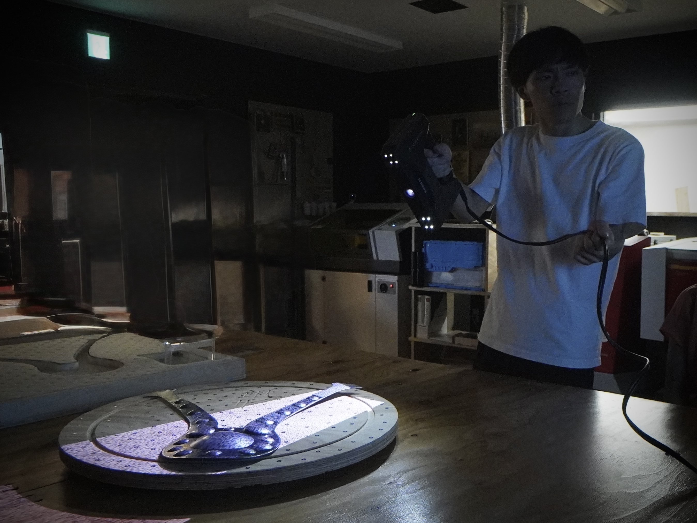

STEP 1
3Dスキャナーを活用した立体データの取得

クリックして画像を追加または assets/images/step1.jpg を配置
EinScan Pro HD や iPhone の LiDAR センサーを用いて、地域の文化財・建造物・自然物などを高精度に3Dスキャンします。
取得したデータはデジタルアーカイブとして保存し、活用・閲覧・再利用が可能な形で管理します。
↓
STEP 2
グッズ展開により収益獲得・認知拡大を図る
 クリックして画像を追加
クリックして画像を追加または assets/images/step2.jpg を配置
スキャンデータを活用し、レーザー加工機・UVプリンターで地域オリジナルグッズを制作。販売による収益獲得と、地域の認知拡大を同時に目指します。
アクリルキーホルダー・レーザー彫刻品・UVプリントグッズなど、様々な形での展開が可能です。
↓
STEP 3
収益を維持管理費に充て、持続可能な体制を目指す
 クリックして画像を追加
クリックして画像を追加または assets/images/step3.jpg を配置
グッズ販売で得た収益を、スキャンデータの維持・更新・管理費用に充てます。外部補助金に依存しない、自走型の持続可能な管理体制の構築を目指します。
記録データを地域の財産として長期的に守り続けるための循環モデルです。
3D データ ビューワー
ドラッグで回転 / スクロールでズーム
ファイルを配置する場合は
assets/models/model.obj に入れてください。ファイルがない場合はサンプルモデルを表示。「モデルを読み込む」ボタンでその場でアップロードも可能です。